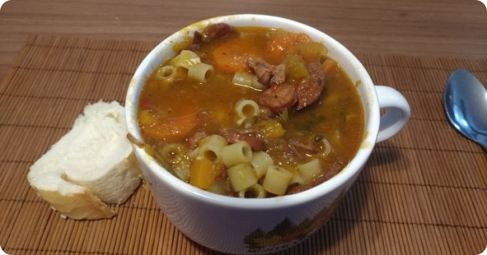

Sopa da
Vovó
Aquela sopinha muito boa com farofa yoki, muito bom mano!

Ingredientes
Macarrão a gosto
1/2 cebola picada
1 colher de azeite
3 dentes de alho ou use o alho comprado pronto
10 ramos de cebolinha verde picada
2 cenouras picadas a gosto
2 batatas picadas a gosto
1 tablete de tempero sabor bacon
1 litro de água
Modo de Preparo
- Frite o azeite com o alho e a cebola em uma panela de pressão.
- Adicione a água e deixe ferver.
- Depois adicione o macarrão, cenoura, a batata, a cebolinha verde e o tablete de tempero sabor bacon.
- Mexa e deixe ferver até perceber que a batata e a cenoura estão cozidos, se desejar tampe a panela, deixe cozinhar por 10 minutos
- Você também pode adicionar carne moída pronta, a gosto.
- Sirva.
- Só